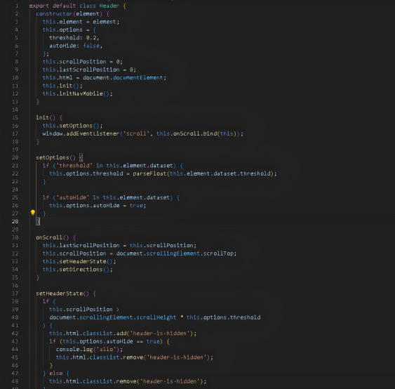

De maquette à intégration
Pour l'intégration, mon stack Tim Tools était déja sur le projet. Ensuite pour le début de l'intégration, j'ai directement intégré le header et le footer en html et css car ils seronts réutilisés dans chaque page du site. Ensuite je me suis direct lancé dans le html des différentes pages que j'allais utilisé lors de la conversion du site en php. J'ai donc créer des structures html solides pour la majorité des pages que j'ai ensuite rendu dynamique grâce au php.

